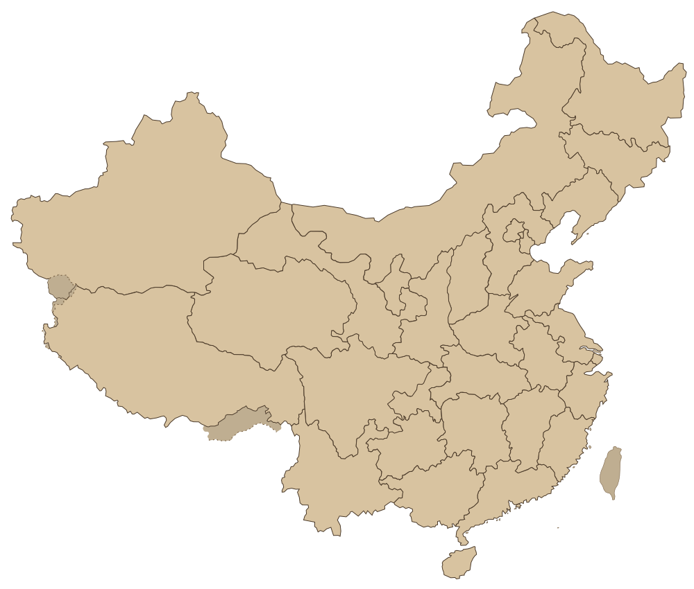

2025.03.08
A MEMORY TABLE
我们的故事
我把你替我记住的那些细节，一件一件摊开。
2025.03.08 / Hangzhou
那天我们从树成林五周年现场，走进了彼此的生命。
我们的第一次合照，牵手，杭州的夜晚有点冷，但两颗心正在被点燃。
2025.03.22 - 03.23
机场不是出发的地方。
是你走向我的证据。
2025 SPRING / DISTANCE DAILY
我随手过掉的日子，在你那里都变成了值得记住的画面。
原来被人认真喜欢是这种感觉。
2025.04.03 - 04.06
我们一起去广州和澳门。
原来旅行最好的风景，是一起看风景的人。
2025.04.05 / Nanchang
那些狼狈的瞬间，后来也变成甜蜜的回忆。
那天我们看到 8 块钱理发，觉得便宜就去试试。剪完后我不敢照镜子，走出来没多久，就抱着你哭了一会儿。
2025.05.09 - 05.12 / Shanghai
那束花不只是花。
是我开始学着用具体的东西表达在意。
2025 SUMMER
我们开始拥有共同餐桌。
吃什么，谁做饭，打游戏，睡觉，上班，买菜，原来幸福不是惊喜，是有人陪你过日子。
2025.07.27 / Shenzhen
陪你去见很重要的人。
那不是只去看一场演唱会，而是进入你喜欢的歌、喜欢的人、喜欢的现场。
2025.10.18 - 10.19 / Changsha
爱不是永远正确。
争吵过去以后，我还是想牵你的手。
2025.11.27 - 11.30 / Guangzhou
三拼三散。
我们把平凡的小时，也过成了电影镜头。
2026.01.19 - 01.27
上海、苏州、南京。
后来我们一起走过了很多地方，上海的雪，苏州的街，南京的灯，我爱你。
2026.03.08 / Hangzhou
希望我们永远不要走散了。
一年前我们在这里相遇。一年后，我们又回到这里。
2026.04.30
你把昨天都记录了下来，那我们的明天就一起写吧。
原来故事被记录的人一直是我，拿着镜头的人一直是你。
1500km / Places we met
每一次奔赴，都在地图上留下了一点光。
这些城市不是景点清单，是我们一次次见面、分别、再见面的证据。
OUR CITIES
2025 - 2026

南京 上海 苏州 杭州 南昌 长沙 广州 深圳 澳门杭州、上海、广州、澳门、南昌、深圳、长沙、苏州、南京。后来我才发现，地图上的距离很远，可我们一直在靠近。
TO BE CONTINUED
未完待续
我们还有很多页没有写完。